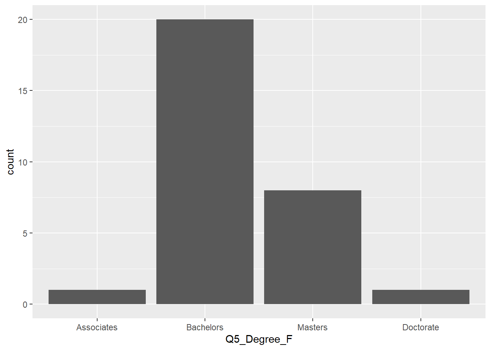
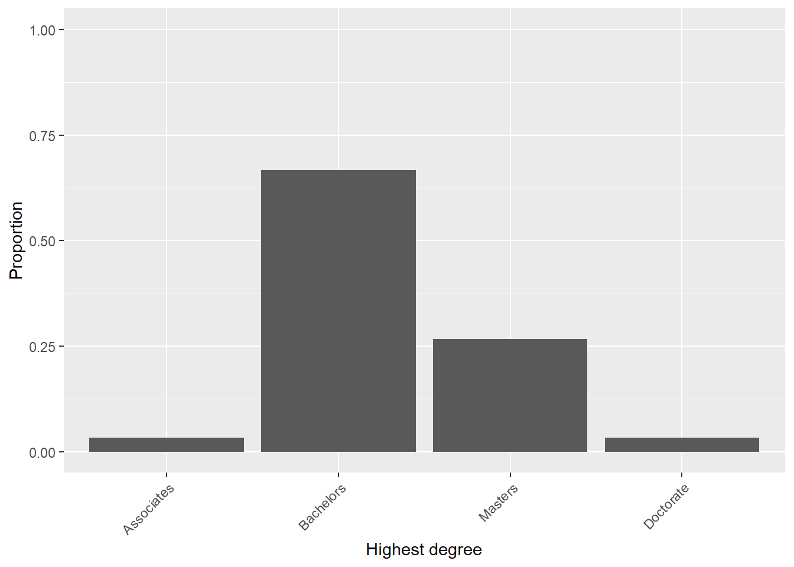
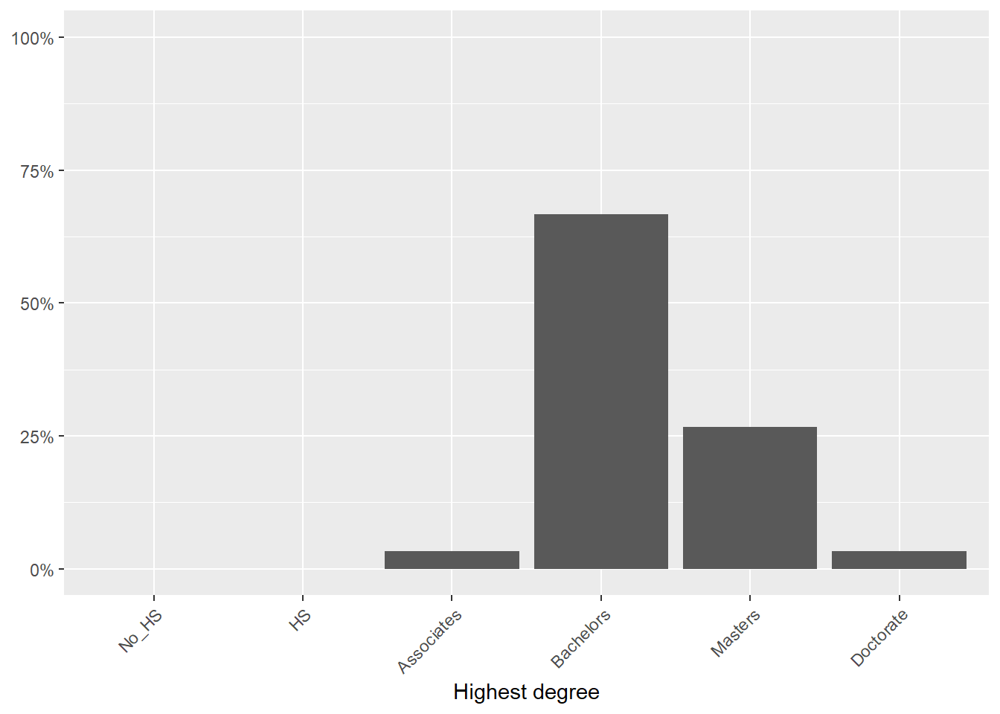
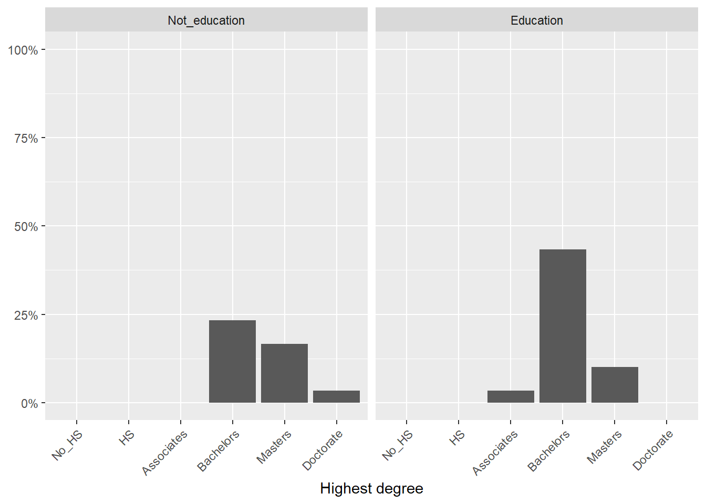

Part 4 Estimating Descriptive Statistics
With surveys, we typically report the descriptive statistics of the individual items and of the scales—the composite variables—that we calculated from those items. There are many ways in R to go about estimating the descriptive statistics.11 An easy way is to use the describe() function from the psych package. We will play with that. Another way is to use Base R’s functions and create our own function.12 This is handy, particularly if a descriptive statistic is not available to us in a package. We will use this approach, too, because we need to report the confidence intervals of the mean estimate–which is not something that seems to be available with the psych package’s describe() function.
We also need to remember that there are different levels of data. For categorical data, such as those on nominal and ordinal level scales, it is a good idea to report the frequency (and percentages) of responses in each category. For interval level data, we can report the means, standard deviations, standard error of the mean, and so forth.
4.1 Descriptive statistics of categorical data
After we’ve imported the data, we can examine the frequency counts of the categorical variables. With our data, we can see some variables are numeric (int or num) and some are character (chr) in type:
## 'data.frame': 30 obs. of 31 variables:
## $ TID : int 1 2 3 4 5 6 7 8 9 10 ...
## $ Q4_Age : num 2 3 3 2 5 6 5 2 4 3 ...
## $ Q5_Degree : num 4 4 4 5 3 4 5 4 4 4 ...
## $ Q6_Math : chr "No" "No" "No" "No" ...
## $ Q6_Bio : chr "No" "No" "No" "No" ...
## $ Q6_Phys : chr "No" "No" "Yes" "No" ...
## $ Q6_Chem : chr "No" "No" "No" "No" ...
## $ Q6_EarthS : chr "No" "No" "No" "No" ...
## $ Q6_EdMat : chr "No" "No" "No" "Yes" ...
## $ Q6_EdSci : chr "No" "No" "No" "No" ...
## $ Q6_EdGen : chr "Yes" "Yes" "No" "No" ...
## $ Q6_Othr : chr "No" "No" "Yes" "No" ...
## $ Q13_NumSs : int 8 12 19 16 18 26 29 16 30 22 ...
## $ Q15_StCentrd_a: int 2 3 3 1 2 3 4 1 4 3 ...
## $ Q15_StCentrd_b: int 2 1 2 1 1 3 2 1 2 2 ...
## $ Q15_StCentrd_c: int 1 4 2 2 3 3 2 1 2 2 ...
## $ Q15_StCentrd_d: int 1 2 3 2 2 3 3 1 4 4 ...
## $ Q15_StCentrd_e: int 2 2 3 1 2 3 4 2 2 2 ...
## $ Q15_StCentrd_f: int 3 3 3 1 3 4 2 1 1 4 ...
## $ Q15_StCentrd_g: int 1 2 3 1 2 3 3 1 3 3 ...
## $ Q16_Lims_a : int 2 1 2 1 1 2 3 1 3 1 ...
## $ Q16_Lims_b : int 1 1 2 2 1 1 2 1 3 2 ...
## $ Q16_Lims_c : int 3 3 3 3 3 3 3 2 2 2 ...
## $ Q16_Lims_d : int 2 2 2 2 2 2 2 1 2 3 ...
## $ Q16_Lims_e : int 1 1 2 2 1 2 2 2 2 2 ...
## $ Q16_Lims_f : int 1 1 1 1 1 1 1 1 2 1 ...
## $ Q16_Lims_g : int 2 1 2 1 1 1 1 2 1 1 ...
## $ Q17_Mins : int 160 180 190 200 210 180 200 240 150 160 ...
## $ Q19_Didac_a : int 3 4 2 3 3 3 2 3 2 1 ...
## $ Q19_Didac_b : int 3 2 1 4 1 4 2 2 2 2 ...
## $ Q19_Didac_c : int 4 3 2 3 2 2 2 1 2 1 ...One of the variables in our data set is Q5_Degree, but it is coded as having numeric values. This is an ordinal level variable. The numbers in the data correspond to these categories on the survey instrument:
- 1 = Did not complete high school
- 2 = High school graduate
- 3 = Associate’s degree
- 4 = Bachelor’s degree
- 5 = Master’s degree
- 6 = Doctorate
To get the frequency counts of the responses in our data, we can use the table() function on the item:
##
## 3 4 5 6
## 1 20 8 1So, there was 1 person whose highest degree was at the associate’s level, 20 with a bachelor’s degree as their highest, 8 with at least a master’s degree, and 1 with a doctorate.
We can calculate the proportion (or percentage) of the responses that are in each category using the prop.table() function around the table function.
##
## 3 4 5 6
## 0.03333333 0.66666667 0.26666667 0.03333333We can see that \(2/3\) of the teachers (\(0.67\)) have a bachelor’s as their highest degree.
4.1.1 Creating factors
Instead of having R treat these as numeric data, which would incorrectly permit calculation of the means and other types of operations that assume an interval level scale, we can change the variable type to be an ordered factor. We can use the factor() function.13
timss$Q5_Degree_F <- factor(timss$Q5_Degree,
ordered = TRUE,
levels = c("1",
"2",
"3",
"4",
"5",
"6"),
labels = c("No_HS",
"HS",
"Associates",
"Bachelors",
"Masters",
"Doctorate"))
str(timss$Q5_Degree_F)## Ord.factor w/ 6 levels "No_HS"<"HS"<"Associates"<..: 4 4 4 5 3 4 5 4 4 4 ...Now that we have labeled the levels in the factor, the output from the table() and prop.table() functions is easier to interpret.14 Factors have a specific set of categories (levels), so when we ask for the frequency of responses in a factor level and zero observations are present, it will still report it (as \(0\)).
##
## No_HS HS Associates Bachelors Masters Doctorate
## 0 0 1 20 8 1##
## No_HS HS Associates Bachelors Masters Doctorate
## 0.00 0.00 0.03 0.67 0.27 0.03Specifying our variables as factors is not always required for simple analyses. It’s a good idea to have two versions, one that is a numeric, dummy-coded, version that we can include in a regression and another that is a factor, which shows up nicely in plots.
4.1.2 Plotting the frequency data
Let’s use the ggplot2 package to plot the data. First be sure to install the package, which you can do by running install.packages("ggplot2").

The ggplot() function includes the data frame in the data = argument, which in this case is timss. Then, there’s the aes() argument, which refers to the aesthetics. This is where we would identify the X and Y axes. Here, we’re only using an X axis. That first line creates the plotting area but does not create the plot yet because we have to specify which type of plot, which is what the geom_bar() in the second line does. Notice that after each line in ggplot, we add a +. This tells ggplot to add the next line to the plot.
We can make modify the plot. One thing we might do is place the scale of the Y axis from 0 to the total number of observations (nrow(timss))), which is 30 in our data. For this, we can use ylim(0, 30) or ylim(0, nrow(timss)). We can change the labels of the x and y axis and change the angle of the text on the x axis.
ggplot(data = timss, aes(x = Q5_Degree_F)) +
geom_bar() +
ylim(0, nrow(timss)) +
xlab("Highest degree" ) + ylab("Count") +
theme(axis.text.x = element_text(angle = 45, hjust = 1))We can plot the proportions on the Y axis, too, if we think that is important. Notice that we can include an aes() argument in the geom_bar() line. I found the (..count..)/sum(..count..)) part of the code in an online post rather than recalling it from memory but this is an example of how we can modify the y axis.
ggplot(data = timss, aes(x = Q5_Degree_F)) +
geom_bar(aes(y = (..count..)/sum(..count..))) +
ylim(0, 1) +
xlab("Highest degree" ) + ylab("Proportion") +
theme(axis.text.x = element_text(angle = 45, hjust = 1))
There are many ways to accomplish the same thing in ggplot. It is powerful but the details are hard to remember.15 Here, we can change the Y axis to be percentages. If we wanted to include “Percentage” on the Y axis label, we would change name = NULL to name = "Percentage" in the code below:
ggplot(data = timss, aes(x = Q5_Degree_F)) +
geom_bar(aes(y = (..count..)/sum(..count..))) +
xlab("Highest degree" ) +
scale_y_continuous(labels = scales::percent, limits = c(0,1), name = NULL) + # This line formats the Y axis as percentages, replaces the ylim(0,1) from before, and removes the Y axis label.
scale_x_discrete(drop = FALSE) + # You can keep this line if you want to include categories that have zero observations.
theme(axis.text.x = element_text(angle = 45, hjust = 1))
4.1.3 Cross-tabulations
We can also create cross-tabulations—also called contingency tables—of categorical data. For instance, in the first chapter, we created a variable that identified whether the respondent had majored in education or not. We can see what the education level breakdowns are within each of these two categories:
timss$Q6_Major_in_Edu <- ifelse(timss$Q6_EdMat == "Yes" |
timss$Q6_EdSci == "Yes" |
timss$Q6_EdGen == "Yes", 1 ,0)Optionally, we can create a factor version of this variable:
timss$Q6_Major_in_Edu_F <- factor(timss$Q6_Major_in_Edu,
levels = c(0,1),
labels = c("Not_education",
"Education") )The simplest function is to use the table() function again. We see two rows, one for each unique value in the first variable.16 We see the six categories of the second variable as the columns:
##
## No_HS HS Associates Bachelors Masters Doctorate
## Not_education 0 0 0 7 5 1
## Education 0 0 1 13 3 0We can create a facet plot to display these side by side. Here, we add a facet_grid() line with the categorical variable that we want the facets to be split up by. Don’t worry if you cannot remember the details of all of this code—the purpose here is to understand what is possible. Often we search for this syntax when we need it.
ggplot(data = timss, aes(x = Q5_Degree_F)) +
geom_bar(aes(y = (..count..)/sum(..count..))) +
xlab("Highest degree" ) +
scale_y_continuous(labels = scales::percent, limits = c(0,1), name = NULL) +
scale_x_discrete(drop = FALSE) +
facet_grid(~ Q6_Major_in_Edu_F) +
theme(axis.text.x = element_text(angle = 45, hjust = 1))
4.2 Descriptive statistics of interval-level data
For this part, let’s use the composite variables we created in the first chapter. Here’s the shortcut version of that code:17
# Reverse scoring the composite Q15 scale:
Q15 <- paste0("Q15_StCentrd_", letters[1:7])
timss$Q15_Index_raw <- apply(timss[ ,Q15],1, mean, na.rm = TRUE)
timss$Q15_Index <- 4 + 0 - timss$Q15_Index_raw
# Lower the composite Q16 scale by 1 point so zero has meaning
Q16 <- paste0("Q16_Lims_", letters[1:7])
timss$Q16_Index_raw <- apply(timss[ ,Q16],1, mean, na.rm = TRUE)
timss$Q16_Index <- timss$Q16_Index_raw - 1
# Reverse scoring the composite Q19 scale:
Q19 <- paste0("Q19_Didac_", letters[1:3])
timss$Q19_Index_raw <- apply(timss[ ,Q19],1, mean, na.rm = TRUE)
timss$Q19_Index <- 4 + 0 - timss$Q19_Index_raw
str(timss)## 'data.frame': 30 obs. of 40 variables:
## $ TID : int 1 2 3 4 5 6 7 8 9 10 ...
## $ Q4_Age : num 2 3 3 2 5 6 5 2 4 3 ...
## $ Q5_Degree : num 4 4 4 5 3 4 5 4 4 4 ...
## $ Q6_Math : chr "No" "No" "No" "No" ...
## $ Q6_Bio : chr "No" "No" "No" "No" ...
## $ Q6_Phys : chr "No" "No" "Yes" "No" ...
## $ Q6_Chem : chr "No" "No" "No" "No" ...
## $ Q6_EarthS : chr "No" "No" "No" "No" ...
## $ Q6_EdMat : chr "No" "No" "No" "Yes" ...
## $ Q6_EdSci : chr "No" "No" "No" "No" ...
## $ Q6_EdGen : chr "Yes" "Yes" "No" "No" ...
## $ Q6_Othr : chr "No" "No" "Yes" "No" ...
## $ Q13_NumSs : int 8 12 19 16 18 26 29 16 30 22 ...
## $ Q15_StCentrd_a : int 2 3 3 1 2 3 4 1 4 3 ...
## $ Q15_StCentrd_b : int 2 1 2 1 1 3 2 1 2 2 ...
## $ Q15_StCentrd_c : int 1 4 2 2 3 3 2 1 2 2 ...
## $ Q15_StCentrd_d : int 1 2 3 2 2 3 3 1 4 4 ...
## $ Q15_StCentrd_e : int 2 2 3 1 2 3 4 2 2 2 ...
## $ Q15_StCentrd_f : int 3 3 3 1 3 4 2 1 1 4 ...
## $ Q15_StCentrd_g : int 1 2 3 1 2 3 3 1 3 3 ...
## $ Q16_Lims_a : int 2 1 2 1 1 2 3 1 3 1 ...
## $ Q16_Lims_b : int 1 1 2 2 1 1 2 1 3 2 ...
## $ Q16_Lims_c : int 3 3 3 3 3 3 3 2 2 2 ...
## $ Q16_Lims_d : int 2 2 2 2 2 2 2 1 2 3 ...
## $ Q16_Lims_e : int 1 1 2 2 1 2 2 2 2 2 ...
## $ Q16_Lims_f : int 1 1 1 1 1 1 1 1 2 1 ...
## $ Q16_Lims_g : int 2 1 2 1 1 1 1 2 1 1 ...
## $ Q17_Mins : int 160 180 190 200 210 180 200 240 150 160 ...
## $ Q19_Didac_a : int 3 4 2 3 3 3 2 3 2 1 ...
## $ Q19_Didac_b : int 3 2 1 4 1 4 2 2 2 2 ...
## $ Q19_Didac_c : int 4 3 2 3 2 2 2 1 2 1 ...
## $ Q5_Degree_F : Ord.factor w/ 6 levels "No_HS"<"HS"<"Associates"<..: 4 4 4 5 3 4 5 4 4 4 ...
## $ Q6_Major_in_Edu : num 1 1 0 1 1 1 0 1 0 0 ...
## $ Q6_Major_in_Edu_F: Factor w/ 2 levels "Not_education",..: 2 2 1 2 2 2 1 2 1 1 ...
## $ Q15_Index_raw : num 1.71 2.43 2.71 1.29 2.14 ...
## $ Q15_Index : num 2.29 1.57 1.29 2.71 1.86 ...
## $ Q16_Index_raw : num 1.71 1.43 2 1.71 1.43 ...
## $ Q16_Index : num 0.714 0.429 1 0.714 0.429 ...
## $ Q19_Index_raw : num 3.33 3 1.67 3.33 2 ...
## $ Q19_Index : num 0.667 1 2.333 0.667 2 ...While we are at this, we might as well estimate the descriptive statistics of two more variables, Q13_NumSs, and Q17_Mins, which are the number of students in the teacher’s math class and the number of minutes in a typical week that the teacher spends teaching math to those students. So, we have five continuous variables we need to report on.
We could use the summary() function for each one, but this is pretty limiting. For example, it does not include standard deviation the or the standard error of the mean.
## Min. 1st Qu. Median Mean 3rd Qu. Max.
## 0.5714 1.2857 1.5714 1.7190 2.0000 3.0000We can use specific functions for the statistics that are missing from summary(), such as sd():
## [1] 0.6054913The na.rm = TRUE tells R to calculate the value even if there are missing data (i.e., remove an observation before the calculation). Most other programs, like SPSS do this by default, but R is making us think twice about this, which is actually a good thing.
We could also use our own function to calculate the standard error of the mean, \(\frac{s_x}{\sqrt{n_x}}\):18
## [1] 0.1105471However, we can also use the describe() function from the psych package to do this work for us.
Let’s pull the psych package from our “library” of packages into our current session so we can use its functions and then put it to use:
## vars n mean sd median trimmed mad min max range skew kurtosis se
## X1 1 30 1.72 0.61 1.57 1.68 0.64 0.57 3 2.43 0.43 -0.62 0.11We can do this with multiple variables at the same time and create a report:
report1 <- describe(timss[,c("Q15_Index",
"Q16_Index",
"Q19_Index",
"Q13_NumSs",
"Q17_Mins")])
report1## vars n mean sd median trimmed mad min max range skew
## Q15_Index 1 30 1.72 0.61 1.57 1.68 0.64 0.57 3.00 2.43 0.43
## Q16_Index 2 30 0.72 0.27 0.71 0.71 0.21 0.14 1.43 1.29 0.39
## Q19_Index 3 30 1.56 0.83 1.83 1.57 0.74 0.00 3.00 3.00 -0.22
## Q13_NumSs 4 30 23.13 5.75 24.00 23.46 4.45 8.00 35.00 27.00 -0.51
## Q17_Mins 5 30 193.67 29.30 190.00 192.92 29.65 150.00 240.00 90.00 0.31
## kurtosis se
## Q15_Index -0.62 0.11
## Q16_Index 0.14 0.05
## Q19_Index -1.27 0.15
## Q13_NumSs 0.14 1.05
## Q17_Mins -1.25 5.35This is great. We have a lot of statistics here that we can include in our write-up. One thing we need, however, that is not included is the confidence interval of the estimated mean. We can create two new columns for this, the lower bound and upper bound of the interval using the formula \(mean \pm z(SE_{mean})\) or \(mean \pm t(SE_{mean})\) depending on whether we want to use a z- or a t-distribution.
However, I stumbled into a problem. The psych package seems to assign attributes to objects we create with the describe() function, which I found was causing a problem when I wanted to perform operations and create new variables in the data frame. I am adding this code here because my code below (which worked in earlier versions of the psych package) was throwing me an error. In looking at the outputted object’s type, which we could see with the str() function or more clearly with the class() function, we see that this is not just a data frame, which is probably the source of my coding problems when I tried to add a new column:
## [1] "psych" "describe" "data.frame"This shows that the object is not just a data frame. Let’s coerce to be just a data frame by using the data.frame() function on it:
## [1] "data.frame"That’s better. I wish the psych package were friendlier. In this next section, we’ll calculate the confidence interval and attach it to this report data frame.
4.2.1 Calculating the confidence interval
We can calculate the estimated 95% confidence interval from the information from the report. Let’s use a t-distribution to multiple by the standard error. This requires the degrees of freedom, which is \(n - 1\) here. The qt() function can be used to get this distribution with the 30 respondents:
## [1] 2.04523This is one tail of the distribution. The other tail would be the negative of this, \(-2.0452\). If we wanted to use the normal (z) distribution, we can use the qnorm() function:
## [1] 1.959964The t distribution is more conservative, which increases the credibility of our inferences about the confidence interval, though it does result in a broader confidence interval than with the z distribution.
With the first variable, the confidence interval is this (with some rounding error):19
## [1] 1.495025## [1] 1.9449754.2.2 Generating and exporting a report
We can use the dplyr package to create the new variables and reorder the variables The %>% symbol means that we take the object before it, report1, and do the following things. Here, we’re using the mutate() function to create new variables for the upper and lower 95% confidence interval boundaries. We also use select() to select which variables we want in our final data set and their order.
# install.packages("dplyr") # Run this line if you need to install it
library(dplyr)
MyReport1 <- report1 %>%
mutate(LB_t = mean - qt(0.975, df = n -1)*se,
UB_t = mean + qt(0.975, df = n -1)*se,
varb = rownames(.) ) %>%
select(varb, n, mean, sd, min, max, se, LB_t, UB_t)
MyReport1## varb n mean sd min max se
## 1 Q15_Index 30 1.7190476 0.6054913 0.5714286 3.000000 0.11054709
## 2 Q16_Index 30 0.7190476 0.2717870 0.1428571 1.428571 0.04962129
## 3 Q19_Index 30 1.5555556 0.8319913 0.0000000 3.000000 0.15190013
## 4 Q13_NumSs 30 23.1333333 5.7519612 8.0000000 35.000000 1.05015963
## 5 Q17_Mins 30 193.6666667 29.3002687 150.0000000 240.000000 5.34947271
## LB_t UB_t
## 1 1.4929534 1.9451418
## 2 0.6175607 0.8205345
## 3 1.2448849 1.8662262
## 4 20.9855157 25.2811509
## 5 182.7257665 204.6075668We can export this to a CSV file, open it in a spreadsheet program like Excel, format the numbers, and then copy and paste the cells into a table in Word or some other word processor.
4.3 But really, it’s inferential
This chapter introduced some ways to calculate and report descriptive statistics. We included in our reports the standard error and the confidence intervals around the mean. However, strictly speaking, any time we seek to draw inferences about a larger population, we are actually estimating inferential statistics, because—well—we are drawing an inference about a larger group of people (the population) based on our sample.20 Whenever we estimate a statistic, such as the mean (or the variance), we have a point estimate. It is very unlikely that this point estimate is the exact mean that is present in the population. The confidence intervals help us to judge how well we can infer from our actual data what the population mean is.
Notice that I said “estimate descriptive statistics.” There is always some degree of uncertainty about how closely our estimates reflect the true status in the population.↩︎
The term Base R is used to describe the functions that come with R rather than those that are part of packages that we install and use.↩︎
This term factor comes from the ANOVA framework, in which a factor has levels. This is not the same thing as a factor in factor analysis, which correponds to a dimension or latent construct in the data.↩︎
Here, we’re using the
round()function to make the output even easier to read.↩︎If you remember the main function, the aesthetics argument and the geoms, you’re in good shape because we often find examples rather quickly in online searches.↩︎
We could have used the regular dummy variable with 0 and 1 values, too. The factor labeling makes it easier to interpret.↩︎
This shortcut code is calculating the composite scores on the raw scale and then rescaling that composite score, as demonstrated at the end of the last chapter. This works because all of the individual items required the same rescaling procedure. If some items in a composite scale require one type of rescaling, such as reverse coding, while others require other scaling, we would need to do this at the item level—which is the longer version presented in the earlier chapter.↩︎
If there were missing data, we would specify
na.rm = TRUEfor thesd()function and useQ15_n <- sum(!is.na(Q15_Index))for the n-size calculation, which is a function that counts the number of observations that are not missing.↩︎A shorter code for these two lines is
1.72 + c(-1, 1) * qt(0.975, df = 30 -1)*0.11.↩︎The reason for this discrepancy seems to be that in many studies in education and psychology, our research questions are about differences between groups, changes over time, or the relationship among variables, such as in a regression. We perform inferential statistical analyses to answer these questions—things like t-tests, repeated-measures ANOVA (including paired t-tests) or regression, and estimates of correlation or regression parameters. Traditionally, before we present those inferential-statistics results, we tend to present the descriptive statistics of the groups or time points we are measuring. In those scenarios, they are called descriptive statistics and are not intended to address inferential questions about the population because that part is reserved for our research questions. In contrast, in survey methods, our research questions might simply be about the mean of the population, in which case, the confidence intervals around those means help us to draw conclusions about how precise our estimates of the means are.↩︎